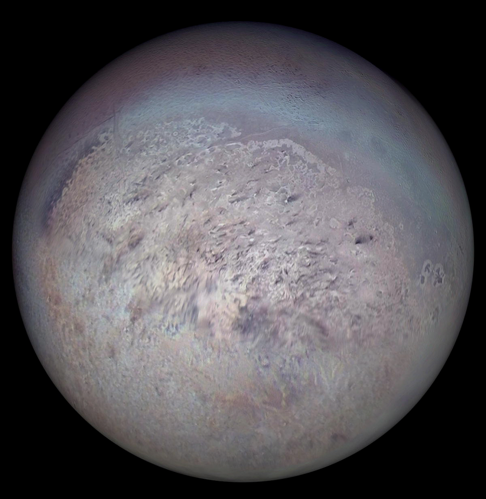

Triton
Triton este cel mai mare satelit natural al planetei Neptun și a fost primul satelit neptunian descoperit, pe 10
octombrie 1846, de astronomul englez William Lassell. Este singurul satelit mare din Sistemul Solar cu o orbită
retrogradă, o orbită în direcția opusă rotației planetei sale. Din cauza orbitei sale retrograde și a compoziției
similare cu Pluto, se crede că Triton a fost o planetă pitică, capturată din centura Kuiper.
Cu 2.710 kilometri în diametru, este al șaptelea cel mai mare satelit din Sistemul Solar, singurul satelit al
lui Neptun suficient de masiv pentru a fi în echilibru hidrostatic, al doilea cel mai mare satelit planetar în raport cu
planeta sa (după Luna Pământului), și mai mare decât Pluto.
